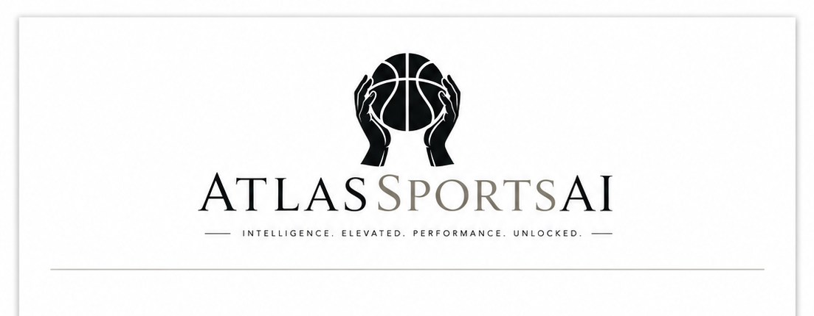

Launch Program
Ambassador Opportunities
AtlasSportsAI is building more than a referral program. The Ambassador track is a launch distribution layer for creators, athletes, coaches, communities, and operators who can help grow the platform while the product expands across sports.
Who Fits
- Sports creators, streamers, podcasters, and short-form video creators.
- Athletes, former athletes, trainers, coaches, sports parents, and local sports leaders.
- Discord community owners, betting-content educators, fantasy communities, and sports data creators.
- Students, campus sports voices, and highly connected local promoters.
What Atlas Provides
- Unique Ambassador code and tracked attribution path.
- Premium site access in 7-day activity windows.
- Dashboard, probability, EV, market, slip, stat, and injury report tooling.
- Program documentation, media guide, and launch talking points.
- Access to new product updates as MLB, AtlasGPT, mobile app, and additional sports come online.
Growth Paths
| Track | Opportunity | Best Fit |
|---|---|---|
| Creator | Unlimited commission potential, work at your own pace, build your own content style, and stay onboard after launch if performance and conduct are strong. | Short-form creators, streamers, sports personalities, local promoters, and high-output sellers. |
| Creative Leader | Top Ambassador associates may be considered for a fully remote team-lead role with base salary plus commission after the launch period. | Organized creators who can lead other Ambassadors, coordinate campaigns, and drive consistent signups. |
| Creative Programmer | Ambassadors who excel while producing strong content may be considered for a salaried content/media team lead role for Atlas advertising and marketing. | Video editors, designers, campaign builders, ad creators, and content operators. |
| Creative Partner | Ambassadors who excel across sales, content, team leadership, and technical/product interest may be considered for upper management after launch with a strong base salary. | Operators interested in growth, programming, product direction, creator management, and long-term Atlas leadership. |
Product Roadmap Talking Points
- NBA model and dashboard are live.
- MLB engine is in active development.
- AtlasGPT is planned as an AI helper for board review, slip explanation, and model context.
- A dedicated app is on the roadmap for alerts, premium access, and mobile workflows.
- The model architecture is moving toward a Sobol / Quasi-Monte Carlo simulation engine.